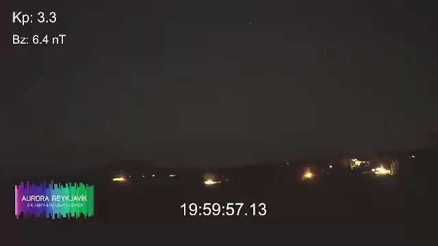
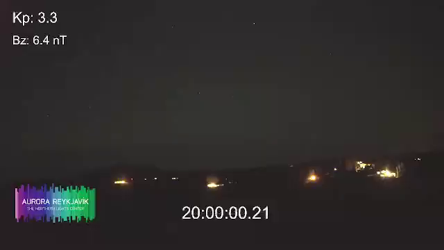
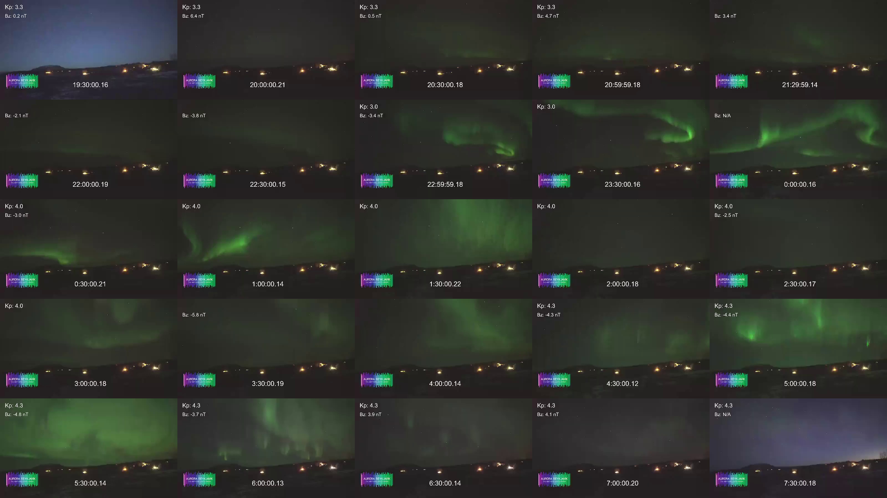
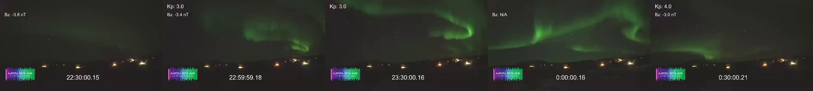
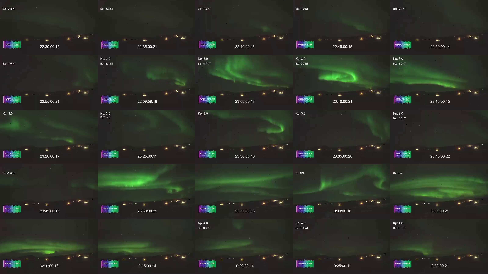

Create a time-lapse video¶
In this tutorial, you will capture frames from a YouTube live stream and assemble them into a short time-lapse video. We’ll work through the full process from a single frame to a finished video using a live stream from Aurora Reykjavik – The Northern Lights Center as an example. Throughout, we’ll use the ypb capture subcommands, which extract frames with per-second precision (unlike ypb download, which operates at the segment level).
Prerequisites¶
Before you begin, make sure you have:
ypbinstalled (from pre-built binaries or a container)ffmpeginstalled (required byypb)
Step 1. Capture the first frame¶
Let’s start with a single frame to confirm everything is working correctly using the capture frame subcommand:
$ ypb capture frame --moment '20:00:00+00 - 1d' 0ujj4HexRpk
(<<) Collecting info about https://www.youtube.com/live/0ujj4HexRpk...
Stream 'Live Aurora stream from The Golden Circle in Iceland' is alive!
(<<) Locating and capturing the moment...
Frame to be captured: Sun, 15 Feb 2026 20:00:00 +0000, sq=38945
Success! Saved to 'Live-Aurora-stream-from-The_0ujj4HexRpk_20260215T200000+00.png'

Note
All commands in this tutorial were supposed to run on February
16, 2026. The flag 20:00:00+00 - 1d subtracts one day from the given time,
so it means yesterday at 20:00 UTC.
Notice that the in-video timestamp is about 3 seconds earlier than the moment we requested. This is a live stream delay. To get a frame where the on-screen clock reads exactly 20:00:00, we need to shift the requested moment forward by that amount:
ypb capture frame --moment '20:00:03+00 - 1d' 0ujj4HexRpk

Tip
The -l/--latency option, added after this tutorial was written,
can apply this correction automatically instead of offsetting each
moment by hand:
ypb capture frame --moment '20:00:00+00 - 1d' -l 3 0ujj4HexRpk
See Correcting for streaming latency for details.
Now the timestamp matches our request. We’ll apply this 3-second offset to all subsequent commands.
Step 2. Capture all night¶
Nautical twilight in Reykjavík ran from 19:49 to 07:35 on February 15. Let’s
capture it using the capture timeline
subcommand with 30-minute intervals to get a quick overview of potential aurora
activity. The -e/--every flag sets the interval between frames:
$ ypb capture timelapse -i '19:30:03+00 - 1d/07:30:03+00' -e 30m 0ujj4HexRpk
(<<) Collecting info about https://www.youtube.com/live/0ujj4HexRpk...
Stream 'Live Aurora stream from The Golden Circle in Iceland' is alive!
(<<) Locating start and end moments... done.
Will capture 25 frames at 30m intervals:
Frame 0: Sun, 15 Feb 2026 19:30:03 +0000
Frame 1: Sun, 15 Feb 2026 20:00:03 +0000
...
Frame 22: Mon, 16 Feb 2026 07:30:03 +0000
(<<) Capturing frames to 'Live-Aurora-stream-from-The_0ujj4HexRpk_20260215T193003+00_e30m'...
0% | | (0/23, 0 it/hr) [0s:0s]

Tip
The contact sheet above was created with ImageMagick:
montage *.png -tile 5x5 -mode concatenate grid.jpg
It was a clear, moonless night with active aurora. The bright flashes are cleary visible, but it would be more interesting to get more detailed frames. One of the brightest activities appears to be around 22:30 to 00:30:

Let’s capture this fragment at finer intervals of 5 minutes to see the aurora’s movement in more detail:

Beautiful! This is the fragment we’ll use for the final video.
Step 3: Plan the final capture¶
Before capturing hundreds of frames, calculate the output video length.
We want to cover 50 minutes of footage (3,000 seconds) and play the result back at 24 fps. With a 5-second capture interval:
- Total frames: 3,000 s / 5 s = 601 frames
- Output video length: 601 frames / 24 fps = 25 s
25 seconds is a reasonable length for a time-lapse. If you want a longer or shorter video, adjust the interval or the playback rate accordingly.
Step 4. Capture the final frames¶
Now run the full capture over the 50-minute fragment at 5-second intervals:
$ ypb capture timelapse -i '22:50:03+00 - 1d/23:40:03+00' -e 5s 0ujj4HexRpk
$ tree Live-Aurora-stream-from-The_0ujj4HexRpk_20260215T225003+00_e5s
Live-Aurora-stream-from-The_0ujj4HexRpk_20260215T225003+00_e5s
├── Live-Aurora-stream-from-The_0ujj4HexRpk_20260215T225003+00_e5s_0000.png
├── Live-Aurora-stream-from-The_0ujj4HexRpk_20260215T225003+00_e5s_0001.png
├── Live-Aurora-stream-from-The_0ujj4HexRpk_20260215T225003+00_e5s_0002.png
...
└── Live-Aurora-stream-from-The_0ujj4HexRpk_20260215T225003+00_e5s_0600.png
1 directory, 601 files
Step 5. Assemble the video¶
With all frames captured, use ffmpeg to convert the frames into a
video:
$ ffmpeg -r 24 -i pattern_type glob -i "*.png" -c:v libsvtav1 -y output.mp4
Input #0, image2, from '*.png':
Duration: 00:00:25.04, start: 0.000000, bitrate: N/A
Stream #0:0: Video: png, rgb24(pc, gbr/unknown/unknown), 640x360, 24 fps, 24 tbr, 24 tbn
Stream mapping:
Stream #0:0 -> #0:0 (png (native) -> av1 (libsvtav1))
Press [q] to stop, [?] for help
Svt[info]: -------------------------------------------
Svt[info]: SVT [version]: SVT-AV1 Encoder Lib v3.1.2
Svt[info]: SVT [build] : GCC 15.2.1 20250924 (Red Hat 15.2.1-2) 64 bit
Svt[info]: -------------------------------------------
Svt[info]: Level of Parallelism: 4
Svt[info]: Number of PPCS 107
Svt[info]: [asm level on system : up to sse4_1]
Svt[info]: [asm level selected : up to sse4_1]
Svt[info]: -------------------------------------------
Svt[info]: SVT [config]: main profile tier (auto) level (auto)
Svt[info]: SVT [config]: width / height / fps numerator / fps denominator : 640 / 360 / 24 / 1
Svt[info]: SVT [config]: bit-depth / color format : 8 / YUV420
Svt[info]: SVT [config]: preset / tune / pred struct : 8 / PSNR / random access
Svt[info]: SVT [config]: gop size / mini-gop size / key-frame type : 161 / 32 / key frame
Svt[info]: SVT [config]: BRC mode / rate factor : CRF / 35
Svt[info]: SVT [config]: AQ mode / Variance Boost : 2 / 0
Svt[info]: SVT [config]: sharpness / luminance-based QP bias : 0 / 0
Svt[info]: -------------------------------------------
Output #0, mp4, to 'output.mp4':
Metadata:
encoder : Lavf61.7.100
Stream #0:0: Video: av1 (av01 / 0x31307661), yuv420p(tv, progressive), 640x360, q=2-31, 24 fps, 12288 tbn
Metadata:
encoder : Lavc61.19.101 libsvtav1
[out#0/mp4 @ 0x56502bfa4380] video:500KiB audio:0KiB subtitle:0KiB other streams:0KiB global headers:0KiB muxing overhead: 0.517067%
frame= 601 fps= 67 q=35.0 Lsize= 503KiB time=00:00:25.00 bitrate= 164.8kbits/s speed=2.77x
Here is the output video: https://video.liberta.vip/w/6egVMr9pLwwGi32o3tg6Gg
The key options:
-r 24— set output frame rate (frames per second) to 24 fps-pattern_type glob -i "*.png"— match all PNG files in the current directory-c:v libsvtav1— encode using the SVT-AV1 codec
Note
On Windows, glob patterns are not supported. Use the explicit numeric pattern instead:
-i Live-Aurora-..._e5s_%04d.png
We used the SVT-AV1 encoder here for its excellent balance of compression and speed, but any encoder will work. To see what’s available on your machine:
ffmpeg -hide_banner -encoders
Useful links¶
- https://en.vedur.is/weather/forecasts/aurora/ — Aurora forecast from the Icelandic Met Office
- https://aurorareykjavik.is/aurora-forecast/ — Aurora forecast on Aurora Reykjavik
- https://www.youtube.com/@aurorareykjavik/ — Aurora Reykjavik on YouTube